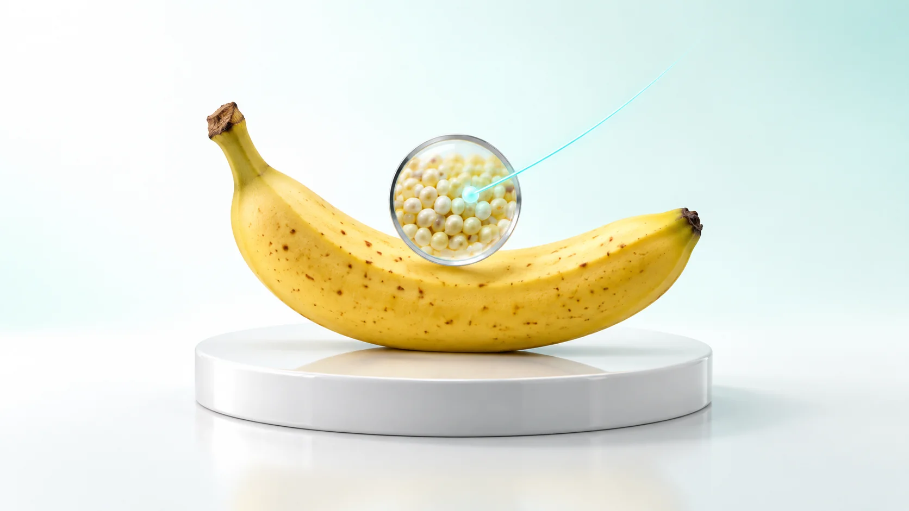
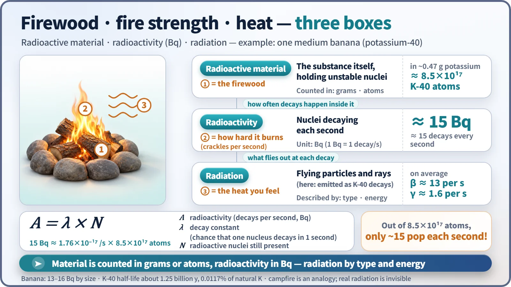
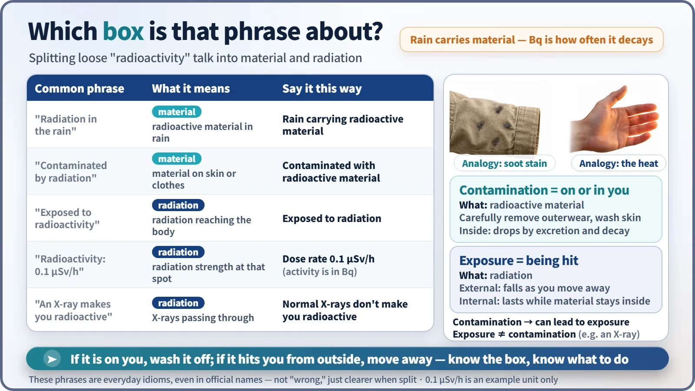

Nuclear & Radiation Basics · 016
Firewood, Flame and Heat — How Radioactivity and Radiation Really Differ
The material is the firewood, radioactivity is how hard it burns, and radiation is the heat that reaches you.

Radioactive material, radioactivity and radiation are three different things. The material is the substance you can weigh, radioactivity is how many of its nuclei decay each second (measured in becquerels), and radiation is what actually flies out at each decay. Keeping them apart tells you what to wash off and what to stay away from. [1]
A quick quiz: what falls in "radioactive rain"?
On a rainy day someone warns, "Don't get caught in the rain, it's full of radiation." What is actually inside those raindrops? Not radiation, and not "radioactivity" either. What can be mixed into rainwater is radioactive material: tiny specks of matter far too small to see. Radioactivity is a property of that material and its strength, and a property can't fall out of the sky.
Splitting hairs? When these words blur, so does the practical question of what to wash off and what to avoid. So let's sort everything into three boxes.
Sit by a campfire and you'll see three things
At a campfire there is the firewood you can pick up and weigh, how hard the fire is burning (how many times per second it crackles), and the heat coming off it that reaches your face from a distance. The atomic world has the same three boxes.
| Campfire | Atomic world | What it is | Counted in |
|---|---|---|---|
| Firewood | Radioactive material | the substance itself, containing unstable nuclei | grams, number of atoms |
| How hard it burns | Radioactivity | how many nuclei decay each second | becquerels (1 Bq = 1 decay per second) |
| Heat coming off | Radiation | particles or electromagnetic waves flying out at each decay (alpha, beta, gamma) | type and energy |
Filling the three boxes with one banana
A banana contains about 0.4 to 0.5 grams of potassium, and natural potassium includes 0.0117% potassium-40, with a half-life of about 1.25 billion years. So a banana is a very weakly radioactive material.
Material: taking the potassium as about 0.47 grams, one banana holds roughly 8.5×10¹⁷ potassium-40 atoms. Radioactivity: on average about 15 of them decay each second, so about 15 Bq (roughly 13 to 16 Bq depending on size). Radiation: about 89% of potassium-40 decays emit a beta particle and about 11% a gamma ray, so at 15 Bq that's about 13 betas and about 1.6 gammas per second. [3]
A = λ × N
A is the radioactivity (decays per second), λ (lambda) is the decay constant, the chance that one nucleus decays in one second, and N is the number of radioactive nuclei present. For potassium-40, λ is about 1.76×10⁻¹⁷ per second, so it takes around 8.5×10¹⁷ atoms just to get 15 pops per second. A 70 kg adult also carries potassium-40, giving the human body a radioactivity of about 4,000 Bq. [2]

The analogy has limits. Fanning a fire makes it burn harder, but radioactivity stays essentially the same whatever the temperature or pressure; it only weakens with time, halving every half-life. And unlike a fire's heat, radiation can't be felt by your eyes or skin, so it has to be measured with instruments.
Feeling the heat doesn't turn you into firewood
"Doesn't an X-ray leave radioactivity in your body?" "Doesn't irradiated food become radioactive?" Warming your hands at a fire doesn't turn them into firewood. The X-rays used in hospitals and the gamma rays used to sterilize food can't change atomic nuclei; they pass through or are absorbed and end up as heat, so the object doesn't become radioactive material. International food standards hold the same view. An X-ray machine makes radiation electrically, without any radioactive material, so it stops the moment you switch it off. [4]
The one exception is neutrons, which can be absorbed into a nucleus and change it. Structural materials bombarded by neutrons inside a reactor for a long time become radioactive material, a process called activation.
Did it stick, or did it hit? Contamination vs. exposure
Contamination means radioactive material has gotten onto skin, clothing or objects, or gotten into the body. Like soot on your clothes after a campfire, it stays when you step away; you reduce it by carefully removing contaminated outer clothing and washing your skin. Exposure means being hit by radiation. Exposure from a source outside the body drops as you move away and stops once you leave, but if radioactive material is inside the body, exposure continues while it remains. [5]
So contamination can lead to exposure, but exposure doesn't mean contamination. An X-ray is exposure, not contamination.

In "contaminated by radiation," what stuck to you is radioactive material. In "exposed to radioactivity," what reached you is radiation. A "radiation leak" usually means radioactive material escaped. The "0.1 µSv/h" on a meter is the strength of radiation at that spot (the ambient dose rate), not anyone's radioactivity. These phrases are so ingrained, even in official names, that there's no need to call them wrong, but splitting them makes it clear what to do.
The units split too: a material's strength is measured in becquerels (Bq), while the radiation a body receives is measured in grays (Gy) and sieverts (Sv), which deserve their own explanation.
Remember the three boxes and nuclear safety comes into focus
Nuclear plant safety is written in this three-box language. Radioactive material is contained behind multiple walls such as the fuel cladding, the reactor vessel and the containment building; radiation is blocked with thick shielding and distance; and contamination is checked and removed with monitors every time people go in or out. Next time you hear "radiation" or "radioactivity," ask: the firewood, how hard it's burning, or the heat coming off it?